Справочники¶
Любой справочник можно открыть из панели быстрых кнопок или меню в зависимости от того, какой экран открыт в данный момент.
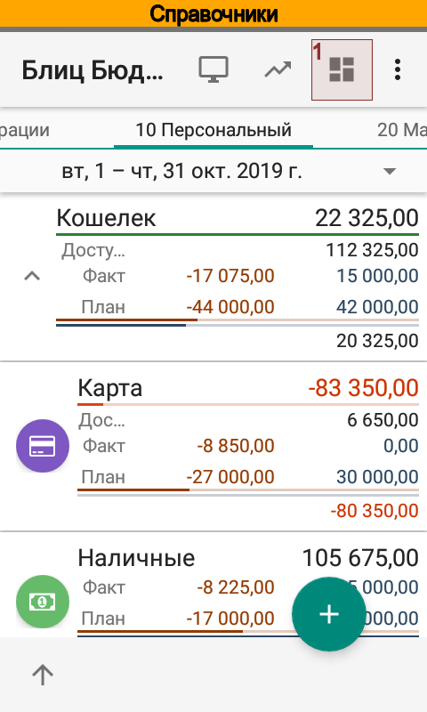 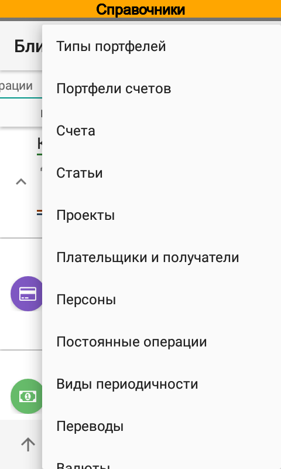{kind=link}
{kind=link}
Типы портфелей¶
Типы портфелей служат для разделения аналитик между портфелями. Например для персонального портфеля может использоваться один набор статей, а для малого бизнеса совсем другой. Тип портфеля учитывается при подборе аналитик (статей, проектов, плательщиков, получателей, персон) в момент редактирования операции.
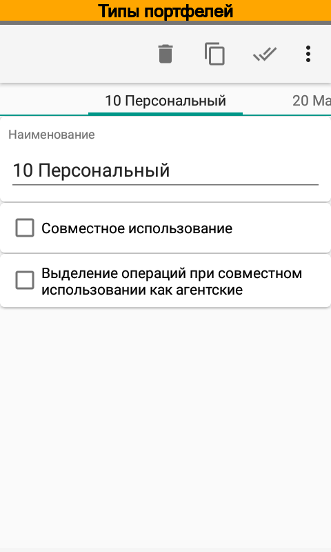 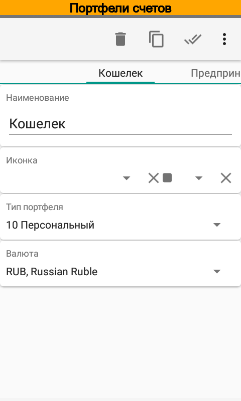 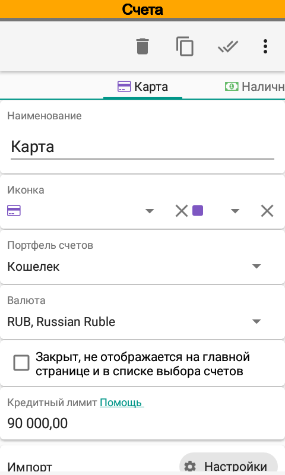{kind=link}
{kind=link}
{kind=link}
Следует обратить внимание на тип портфеля Универсальный. В старых версиях этот тип называется 00 Не указано. Аналитики этого типа портфеля всегда доступны для использования. Например, статья Перевод принадлежит портфелю Универсальный и может быть выбрана в любой операции вне зависимости от выбранного счета и связанного с ним типа портфеля.
Примечание
По умолчанию, аналитики портфеля Универсальный доступны для всех счетов
См. также Совместное использование типов портфелей.
Портфели¶
Справочник Портфели служит для группировки счетов. Каждый портфель имеет свои валюту. Итоги и движения по портфелю будут отображаться в указанной валюте исходя из курсов справочника Валюты.
Счета¶
Счетом может быть банковский счет или карта, металлический счет, наличные и пр. Каждый счет имеет свою валюту, которая может отличаться от валюты портфеля.
Идентификатор счета используется при импорте данных, см. Импорт данных. Можно указать несколько идентификаторов, разделенных запятой. Идентификатором может также служить телефонный номер, короткое имя отправителя SMS или идентификатор пакета Push уведомлений.
Ключевые слова счета также используются при импорте SMS. В случае операций перевода счет, найденный по идентификатору является отправителем, а счет найденный по ключевым словам — получателем. Перевод может быть как положительным (зачисление), так и отрицательным (списание). Ключевые слова используются только для переводов.
Например, от банка поступило SMS:
Karta Visa2900. Proizvedeno snyatie 2000.00 RUR ATM .Ostatok:274.26 RUR. 25/03/14,15:00:00.
В этом случае Visa2900 является идентификатором счета Карта, ATM — ключевой фразой счета Наличные. При импорте SMS приложение создаст две операции — операцию списания для счета Карта и операцию зачисления для счета Наличные.
Настройка импорта SMS определяет как именно будут распознаваться операции. Подробнее о настройках импорта SMS см. Расширенная настройка импорта SMS и push-уведомлений.
Значения по умолчанию, заданные для проектов, контрагентов и персон, будут использоваться при создании операций. При импорте и обмене данными приложение также использует эти значения.
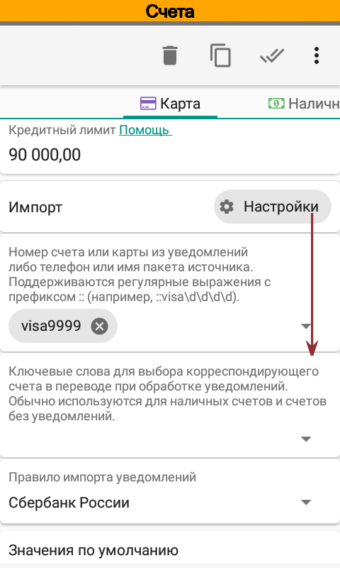 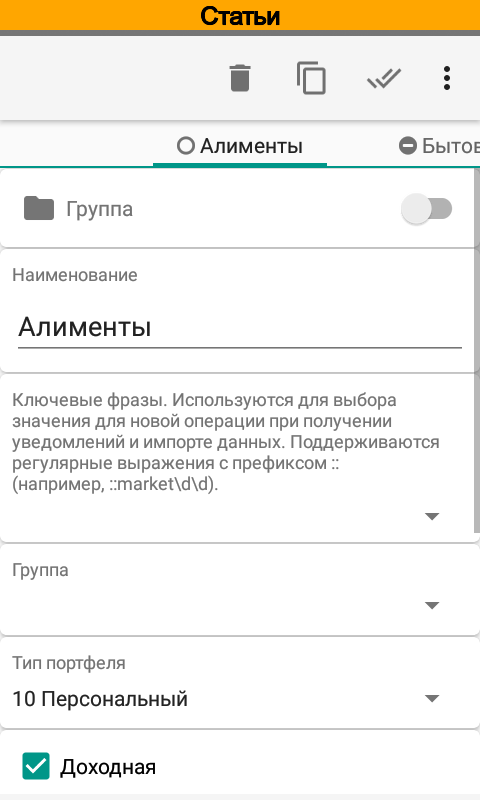 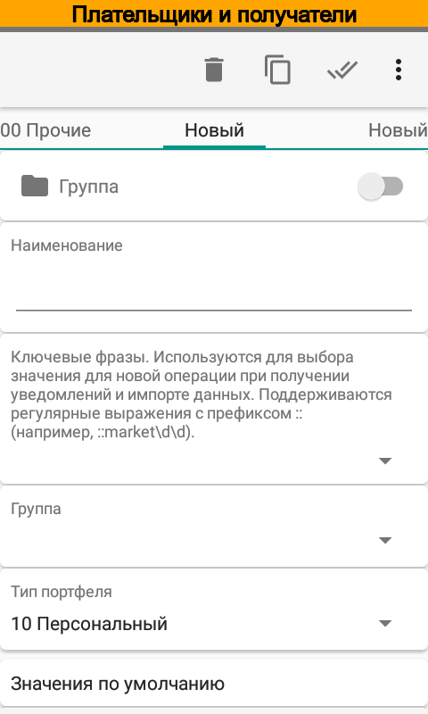{kind=link}
{kind=link}
{kind=link}
Статьи¶
Справочник является основным при классификации операций. Выбранная статья влияет на то, как будет учитываться операция на главном экране, в отчетах и списке операций. В зависимости от признаков статья может быть доходной, расходной, технической, переводной и архивной.
Признаки Доходная и Расходная влияют на сортировку статей при редактировании операции. Для доходный операций сначала будут отображаться доходные операции, затем расходные и наоборот.
Статья может не быть ни доходной ни расходной. В этом случае статья считается технической. В качестве примера использования технической статьи можно привести операцию изменения кредитного лимита на карте Сбербанка. Движение денег для владельца карты в такой операции нет, но сумма на карте увеличивается или уменьшается. Для такой операции следует выбрать техническую статью. Подробней ввод кредитного лимита рассмотрен в вопросах и ответах (Как задать кредитный лимит).
По суммируемым статьям можно увидеть баланс в отчетах и .
Статья может иметь признак исключаемой из портфеля. Такие статьи обычно используются в операциях, которые не изменяют остатка внутри портфеля. Если у статьи установлен такой признак, то все движения по этой статье не будут влиять на сумму движений денежных средств за период. В списке операций итоги по таким статьям выводятся отдельно.
Ключевые фразы используются для подбора при импорте данных. Можно указать несколько ключевых фраз, разделенных запятой,
В операции может быть указано несколько статей.
Справочник автоматически заполняется при установке приложения, однако Вы можете отредактировать его на свой вкус.
Плательщики и получатели¶
Под плательщиками и получателями в программе понимается вторая сторона в денежной операции. Часто это сторону называют контрагентом. Без контрагента операции не может быть (за исключением перевода между своими счетами). В операции может быть указан только один контрагент.
Проекты¶
Проектом может быть, например, отпуск, строительство дома, стартап и т.п. В операции может быть указано несколько проектов.
Ключевые фразы используются для подбора при импорте данных. Можно указать несколько ключевых фраз, разделенных запятой.
Персоны¶
В справочник Персоны можно указать членов семьи или сотрудников предприятия. В операции может быть указано несколько персон.
Ключевые фразы используются для подбора при импорте данных. Можно указать несколько ключевых фраз, разделенных запятой.
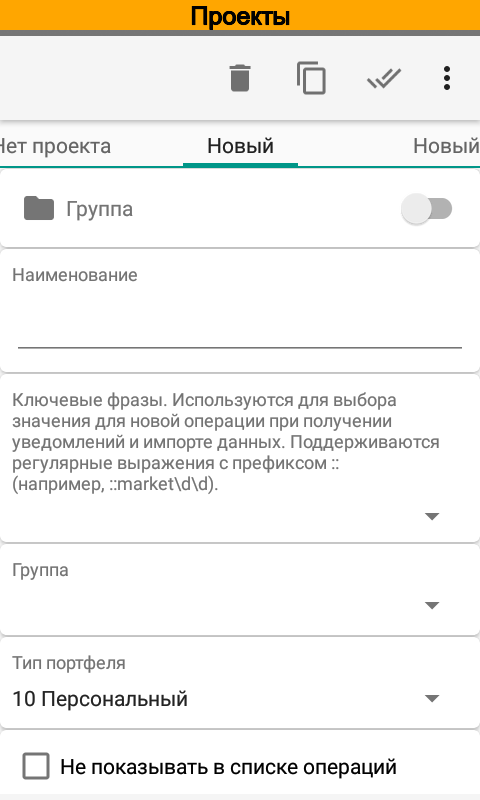 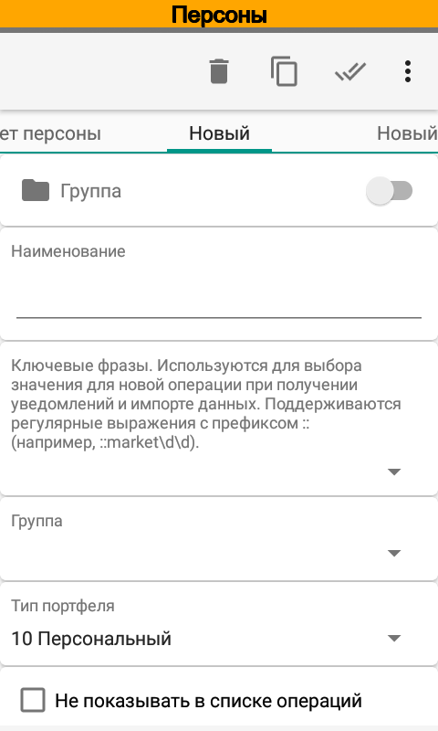 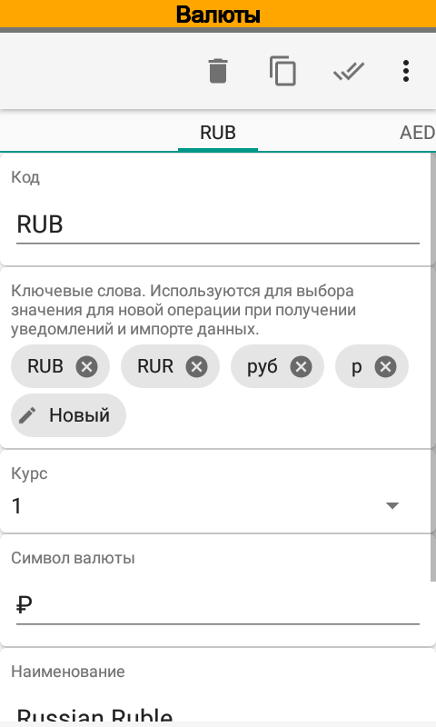{kind=link}
{kind=link}
{kind=link}
Валюты¶
Сразу после установки приложение содержит практически все мировые валюты. При необходимости, Вы можете добавить в справочник новую валюту.
Итоговые значения в разрезе портфелей рассчитываются согласно курсам валют. Курсы валют можно указывать вручную или загружать из интернет-источников. В зависимости от настроек курсы валют загружаются из следующих источников: Центральный Банк РФ (валюты и драг. металлы), Центральный Европейский Банк, банк Канады, Национальный Банк Республики Беларусь, Национальный Банк Республики Казахстан, банк Израиля, BitPay (котировки валют относительно BTC), Poloniex (биржа крипто-валют).